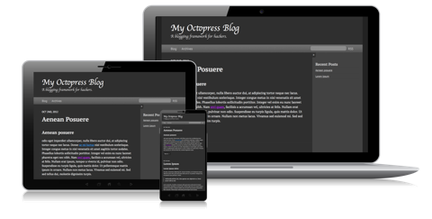

Hello, Everyone! This is blog post for helping you setup your own blog using Octopress framework running over Jekyll. I am Summer Intern at Ophio, a New York based company. I have been given a task to set up my blog. My mentor Mr.Saurabh is a Senior Back-end Developer. He developed many cool stuffs and active contibutor to open-source technology.
Deployment of Octopress : Blog Frameworks for Hackers
Octopress is a static blogging framework built on top of Jekyll. It uses scripts to build static files to be deployed to a server. You can design your blog and deploy on Github-Pages very quickly.
Installation's :
- Git
- Jekyll
- Ruby Gem
How to setup Octopress?? Go ahead.
Variety of theme available here.

Share on: